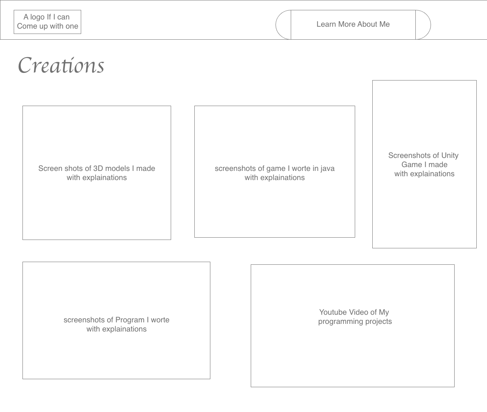
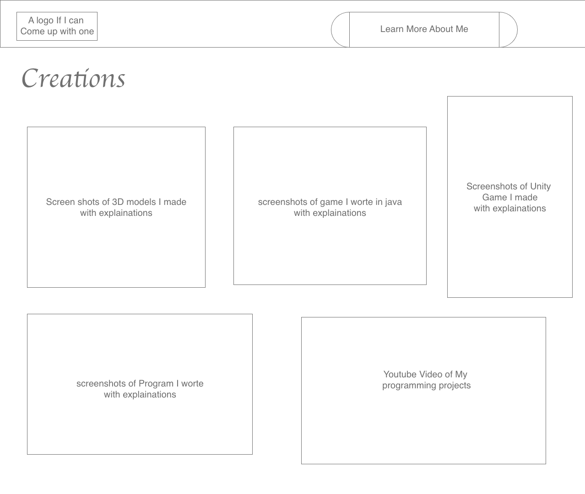
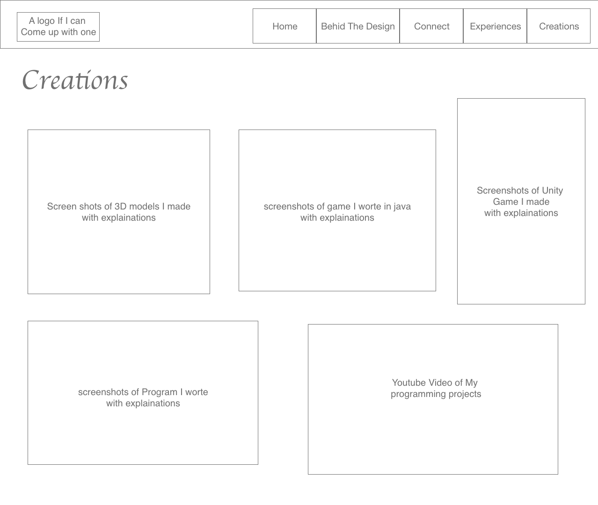
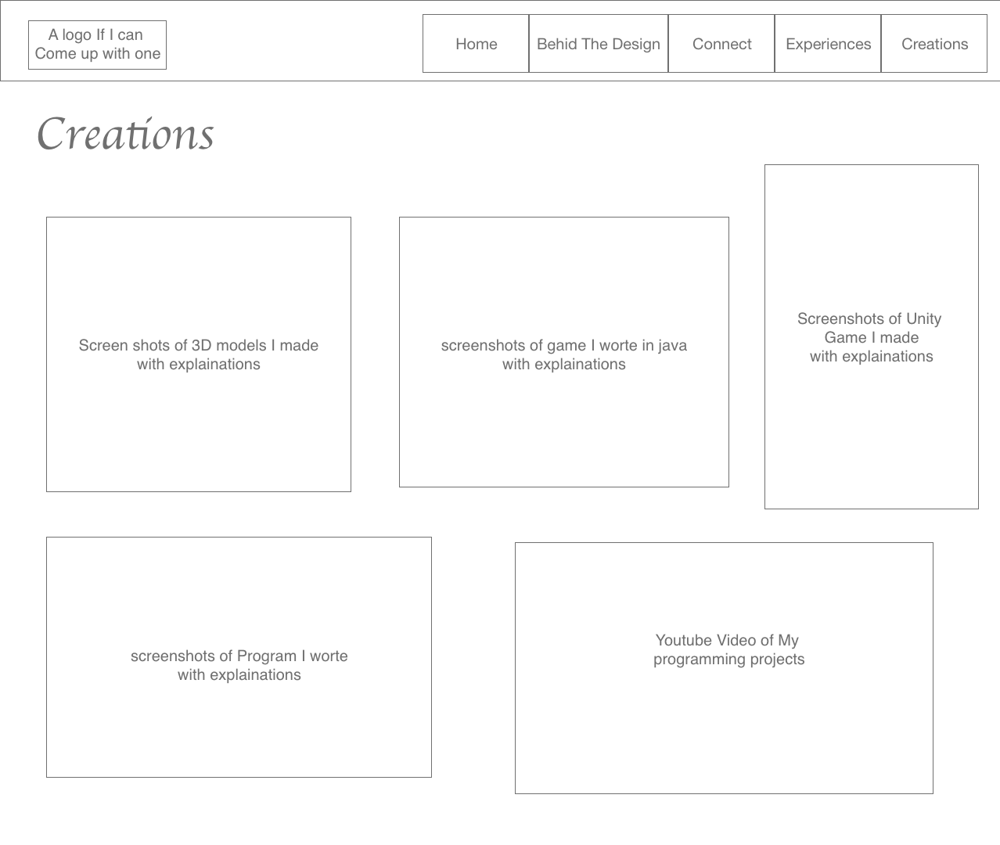

Behind The Design
Connect
Experiences
Creations
Behind The Design
Connect
Experiences
Creations
Design Idea


1. Initial Planning Stage
The design process began with a careful review of the project requirements. Based on the guidelines, I identified the need to create five distinct HTML files: a homepage, a work showcase page, a resume page, a contact page, and a process page. To streamline the workflow, I labeled each file appropriately, ensuring the structure was clear and organized from the outset. Naming conventions were carefully chosen to maintain consistency and support efficient development.
2. Brainstorming and Ideation
With the requirements in mind, I transitioned into the brainstorming phase. This involved exploring potential design styles that would best represent the purpose of the website while adhering to WCAG 2.0 accessibility standards. I sketched out several ideas, balancing aesthetics with usability.
The first concept involved an innovative "bubble menu" design, where each menu item would be represented as an interactive bubble, and the navigation bar would feature a single prominent button. While visually striking, I realized that this approach might confuse users by presenting too many abstract choices upfront. Additionally, implementing this design while meeting the requirement of five distinct pages proved challenging.
The second concept, which I ultimately implemented, focused on simplicity and clarity. By prioritizing straightforward navigation and content hierarchy, this design ensured users could easily locate and engage with key information without unnecessary distractions.
Lastly, a third concept emerged spontaneously during a casual moment (while cooking). This idea involved creating a single-scroll page akin to Apple's product introduction pages. While elegant and user-friendly, it diverged from the requirement for a multi-page layout and was thus set aside.
Through this ideation process, I recognized that a good design minimizes decision fatigue for users. Instead of overwhelming them with choices, the design should guide users through a carefully curated experience, ensuring they focus on the content rather than the navigation itself.
3. Final Design Decision:
The second design, though not flashy, effectively balanced simplicity and functionality. The straightforward structure allows users to navigate effortlessly, providing a clear focus on the website’s content. Each page serves its intended purpose without unnecessary embellishments, ensuring the design aligns with both the project requirements and user-centric design principles. Moreover, this approach aligns with WCAG guidelines by ensuring intuitive navigation and clear content structure, improving accessibility for all users.
As I progressed through the development of my website, I constantly considered how to enhance the user experience and guide users effectively through the content. My primary concern was ensuring users would engage with all the pages without feeling lost or overwhelmed by the navigation bar.
Design 1
 


Design 2
 


Development Stage
As I progressed through the development of my website, I constantly considered how to enhance the user experience and guide users effectively through the content. My primary concern was ensuring users would engage with all the pages without feeling lost or overwhelmed by the navigation bar.
1. Guiding Users Through Navigation
To address this, I devised a solution: incorporating an arrow button at the bottom-right corner of each page. This arrow not only visually indicates the next page but also includes the name of the upcoming section. By doing this, I could subtly encourage users to follow the reading flow I designed without relying solely on the navigation bar.
Furthermore, I made the arrow clickable, functioning as a shortcut to the next page. This design choice aligns with common user behaviors; readers generally prefer not to move their mouse all the way to the top of the screen to navigate. The arrow button allows for a seamless and intuitive browsing experience while maintaining the linear progression I envisioned.
To make the homepage easily accessible and distinctive, I placed its link separately on the left side of the navigation bar as a unique button. This separation enhances its visibility, drawing users’ attention and ensuring they can quickly return to the starting point if needed.
To enhance focus on the content, I decided not to make the top navigation bar fixed at the top of the page. While fixed navigation bars are often useful for longer webpages, in this case, they could become distracting. Since my webpage is concise and content-focused, I wanted users to concentrate on reading the page fully before clicking the arrow to move on to the next.
2. Exclusion of a Footer
Given the short length of my webpages and the relatively minimal content, I decided a footer was unnecessary for this project. A footer is generally more appropriate for longer pages or websites with extensive information. Omitting the footer ensures a cleaner layout and keeps the user's attention on the primary content.
3. Enhancing Visual Comfort
Originally, the website was designed with a simple black-and-white color scheme. However, during development, I reflected on my own experience as someone whose eyes easily tire from prolonged reading. To address this, I introduced a gradient background that transitions from light gray at the top to a soft gray-orange at the bottom.
This subtle color transition not only improves visual appeal but also reduces eye strain, creating a more comfortable reading experience. I experimented with various color combinations, but this transition felt the most natural and soothing, enhancing the overall usability of the site.
Additionally, the contrast between the light gray and soft gray-orange is carefully selected to ensure it remains distinguishable for color-blind users. This combination meets WCAG standards, guaranteeing that the content is accessible to all users, including those with color vision deficiencies. The choice of these colors ensures that readability and visual comfort are maintained without compromising on accessibility.
4. Interactive Feedback Through Hover States
Another feature I added was hover states for almost every clickable object. By implementing hover effects, I provided users with clear visual cues about which elements are interactive and which are static. This subtle interaction design improves navigation clarity and helps users quickly identify links that lead to new pages or external content. This approach ensures compliance with WCAG guidelines, providing visible focus indicators for keyboard and mouse users.
For example, non-clickable items, such as the QR code for my WeChat, remain static, ensuring there is no confusion about their functionality. This differentiation enhances the user experience, ensuring users can easily distinguish between actionable and decorative elements.
5. Balancing Functionality and Design Goals
While I originally considered creating a single scrolling page, the project requirements specified five separate HTML pages. The arrow navigation button allowed me to achieve a balance between a linear reading flow and the multi-page structure. By guiding users through the site in a thoughtful sequence, I ensured they could engage with the content in the intended order without feeling overwhelmed or disoriented.
Thank You for visiting my page